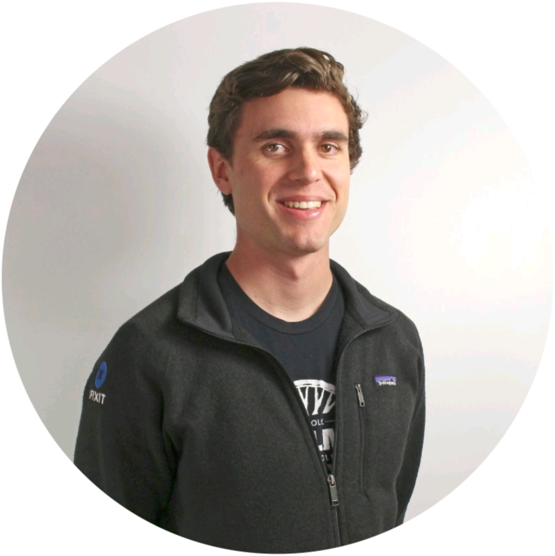
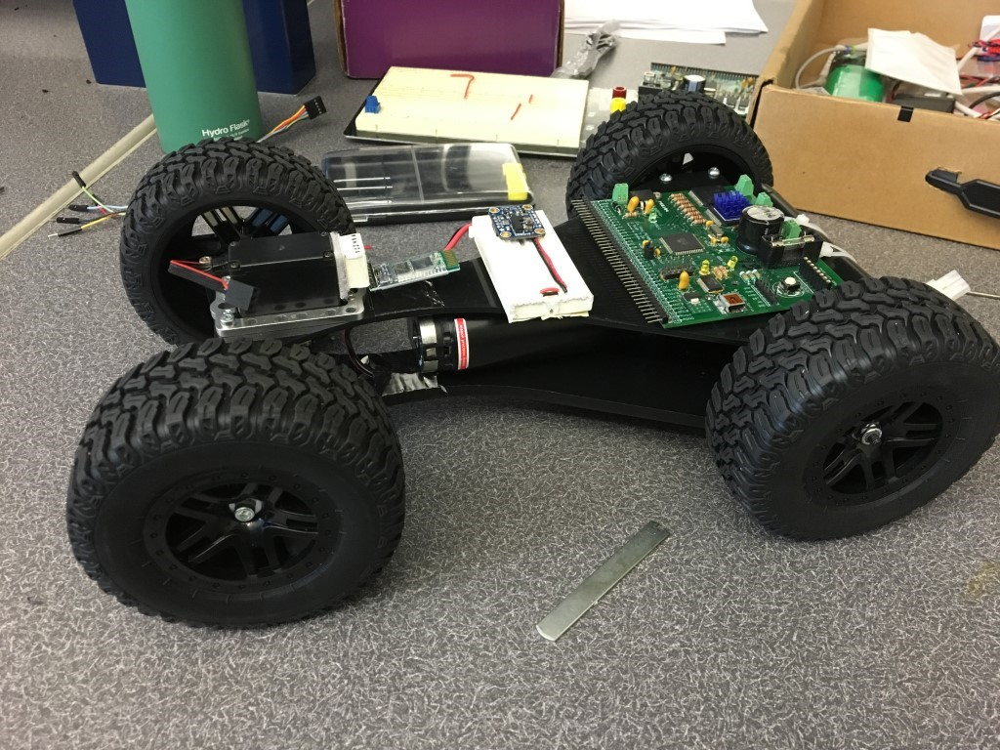

Machined Aluminum Rear Bike Rack
An in-progress bikepacking rack designed around rough gravel use, a 20 lb cargo target, low deflection, shop-available 6061 aluminum, and validation testing before real trips.
Learn more
I design electromechanical products, production equipment, fixtures, drawings, and validation plans. My work sits where CAD, shop time, test data, supplier input, and manufacturing feedback have to agree. I am currently a Design Engineer at Wasco Switches and Sensors, with previous technical writing experience at iFixit, and I am a Cal Poly SLO mechanical engineering and mechatronics graduate, cyclist, and hands-on builder.
An in-progress bikepacking rack designed around rough gravel use, a 20 lb cargo target, low deflection, shop-available 6061 aluminum, and validation testing before real trips.
Learn more
A Bluetooth-controlled mechatronics car designed to drive right-side up or upside down by reorienting its controls after a flip.
Learn moreNew product design, sustainment engineering, manufacturing process improvement, experiment design, validation testing, supplier coordination, quality/RMA support, root cause analysis, FMEA, GD&T drawings, tolerance considerations, and ECOs.
Repair documentation, technical communication, teardown logic, procedural writing, hands-on product investigation, and practical repair/build work.
Drawing updates and ECO support in a manufacturing engineering environment.